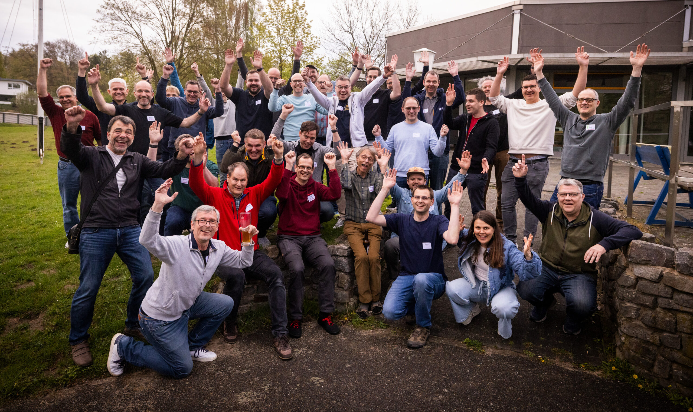
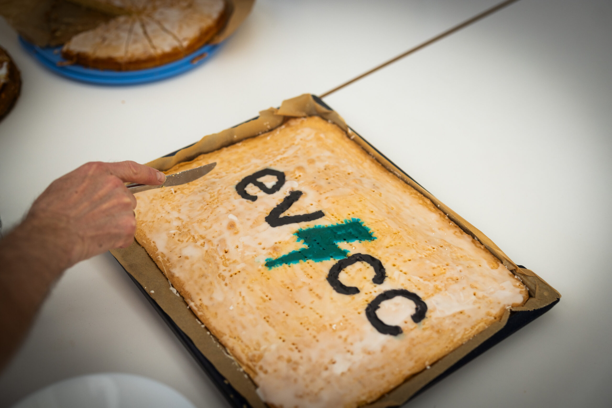

Das Treffen brachte Nutzer, Entwickler, Elektriker, Integratoren und Menschen aus der Praxis an einen Tisch. Genau diese Mischung macht evcc so stark: reale Fragen aus Anlagen, Fahrzeugen, Speichern, Wallboxen und Gebäuden treffen auf Menschen, die Lösungen offen diskutieren und gemeinsam verbessern wollen.
Für uns war es eine sehr gute Gelegenheit, eHive One und die dazugehörigen Apps direkt in diesem Umfeld zu zeigen. Unsere Idee dahinter bleibt klar: evcc braucht im Schaltschrank eine saubere, kompakte und robuste Hardwarebasis, auf der Energieflüsse, Ladepunkte und zusätzliche Apps verlässlich zusammenkommen können.
Wir haben dabei nicht nur über die Hardware gesprochen, sondern auch gezeigt, wie Apps wie chargeLedger, wattRadar, ioManager und Tunnel Manager den SmartHub erweitern können. Gerade diese Kombination aus Gerät, evcc und ergänzenden Apps macht eHive für viele reale Anlagen interessant.
Open Source live
Besonders stark war der offene Austausch. Es ging nicht um Hochglanzfolien, sondern um echte Setups, technische Fragen, Erfahrungen aus dem Alltag und konkrete nächste Schritte. Genau daran sieht man, warum Open Source funktioniert: Wissen bleibt nicht bei einzelnen Personen hängen, sondern wird geteilt, geprüft und weitergebaut.
Spannende Themen aus der Runde
Die Themensammlung war breit und praxisnah. Es ging unter anderem um diese Punkte:
- Einblicke in den Ruder-Verein, die Anlage und optional in UniFi-Infrastruktur mit Netzwerk, WLAN und Zutrittskontrolle.
- Home Assistant Add-on, EOS Integration und die Überführung bestehender YAML-Konfigurationen.
- Ein Elektriker hat unseren eHive One direkt aus der Praxis gezeigt. Vielen Dank für das Vertrauen und die wertvollen Einblicke aus dem Installationsalltag.
- Batteriesteuerung mit §14a, Victron, Winterbetrieb, Hochpreiszeit-Überbrückung und Blick auf bidirektionales Laden.
- Direktvermarktung, Arbitrage, mini-Loadpoints, Verbrauchsmessung, Ladesäulen-Kosten und API-Anbindungen.
- Heizstab-Nachrüstung, Lastmanagement, ältere Compleo-Ladesäulen mit LSX Controller, OCPP und Backend-Integrationen.
- AI-readiness der evcc-Codebase und nachvollziehbare Fehleranalyse in Steuerungen.

Glückwunsch an iseeberg79
Ein besonderer Glückwunsch geht an den GitHub-User iseeberg79, der beim Treffen einen eHive One gewonnen hat. Wir wünschen viel Freude damit und sind gespannt, welche Ideen daraus im eigenen Setup entstehen.
Danke an die Community
Das Treffen hat uns noch einmal bestätigt, warum wir eHive One rund um evcc bauen: nicht als abgeschlossene Insel, sondern als Teil eines offenen Ökosystems. Danke an alle, die vor Ort diskutiert, gefragt, getestet, erklärt und mitgedacht haben.
Weitere Details zum Treffen und zur ursprünglichen Sammlung stehen in der evcc Community Diskussion auf GitHub.